Potential Climate Change Impacts on Severe Weather
We examine potential changes in frequency of severe weather conditions in a warming
climate by use of output from a scenario simulation made with HadCM. The
simulation spans several centuries and contains a roughly 1% annual increase
in effective GHG concentration. HadCM grid spacing is 2.5 latitude by 3.75
longitude with 19 hybrid sigma-pressure levels (sigma only in the lower
troposphere and pressure-only in the upper stratosphere).
Note at this resolution Florida does not exist (it might not exist in the
future anyway).
Climate change problems are enormous in that a reasonable measure of uncertainty is obtained
only by using multiple GCMs to simulate multiple climate scenarios.
Furthermore, it is sometimes necessary to generate higher resolution
data. It isn't clear if this is necessary for severe weather.
Here, we start with a very small piece of the problem by examining output from one
GCM simulation. The output contains two 10-year slices; one that is representative
of the current climatic conditions and another for the years 2040-2049. We also
include analysis of NCEP-NCAR Reanalysis (NNRP) data for 1990-1999 to identify biases
in HadCM fields. We focus only on the warm season months, April through September, and
limit our analysis to profiles generated at 00 UTC.
Below we show fields of three parameters that are supportive of severe weather: CAPE, 0-6 km Shear,
0-1 km shear. These variables are combined in various ways, i.e. severe weather indices, to
estimate the number of potential
severe weather days. We show fields of severe weather indices .
Main results
- The largest changes are in the frequency of days with extrememly high CAPE.
This might indicate that warming and moistening is greater near the surface than aloft, so that
steeper lapse rates result in the lower half of the troposphere.
The higher frequency of CAPE > 2000 J/kg suggests an increased potential for
severe weather, such as hail, and also heavy rain rates.
- The northward extent of high incidence of high CAPE days does not change. The relative
contributions of moisture transport and convergence into the Midwest and local moistening
can be examined to better understand why this is so.
- The higher incidence of high CAPE days over the Gulf of Mexico in HadCM might be caused
by a bias toward warmer than observed SST in that region.
- The comparitively small decrease of high CAPE days in MN and WI is probably insignificant.
- Also, the small increase of high shear (0-6 km) days in the northern tier is probably
insignificant, suggesting changes in the warm season continental circulation are minimal.
- These results suggest
that changes in potential for severe weather are mostly controlled by low-level warming
and moistening rather than changes of the circulation.
Below are fields of the frequency of CAPE > 2000 J/kg. The parcel for this CAPE calculation
is a 100 mb mixed layer parcel. We note the following:
- HadCM control generally has higher frequency than the NNRP, especially in the Gulf of Mexico.
- HadCM scenario has higher frequency than HadCM control everywhere except WI and MN.
|
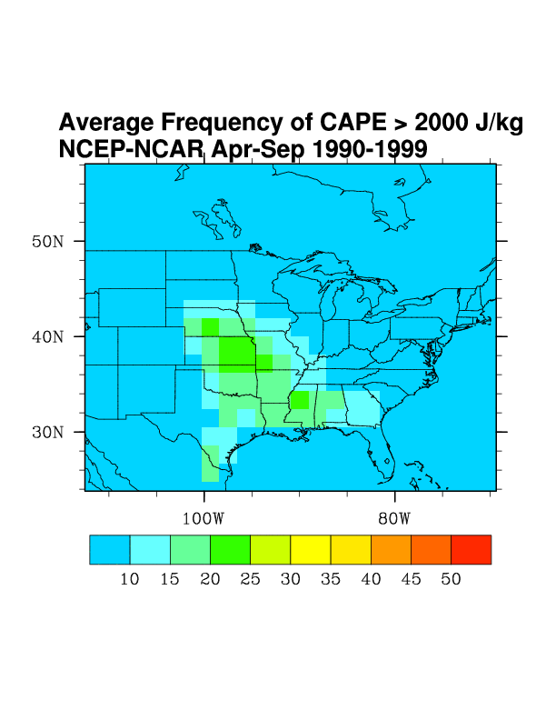
|
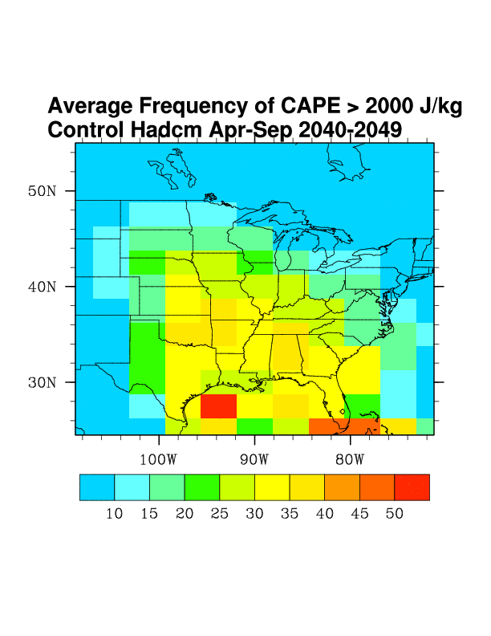
|
|
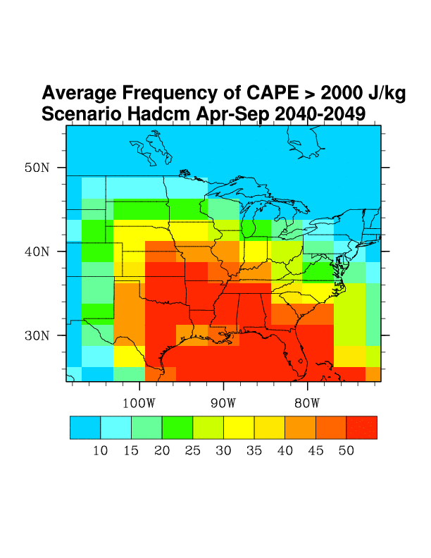
|
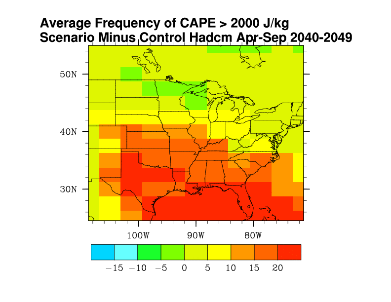
|
Below are fields of the frequency of 0-6 km shear > 20 m/s. We note the following:
- The changes in this quantity are very small, except east of Hudson's Bay, where the
increase might indicate a northward shift in the position of the mean jet stream.
- HadCM control and NNRP have about 60 days per warm season in the northern US tier, though
maximum frequency in the HadCM is shifted northward compared to in NNRP.
|
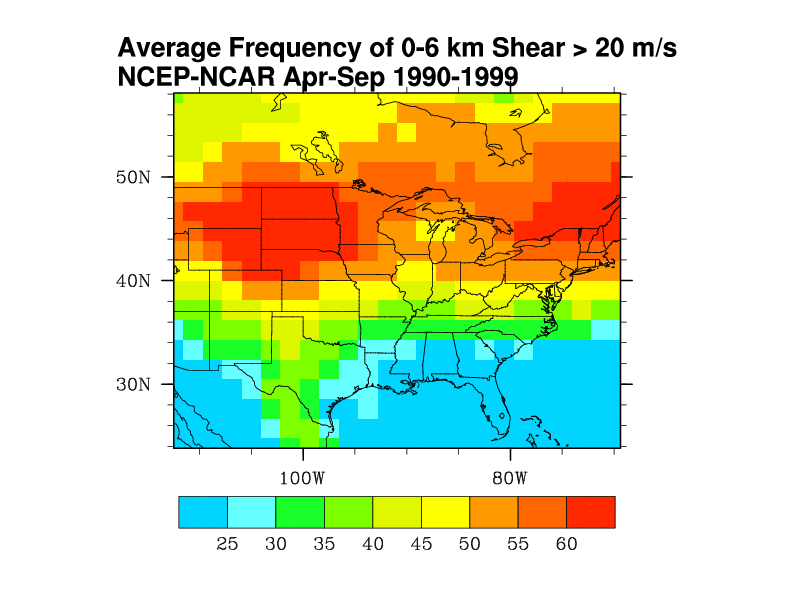
|
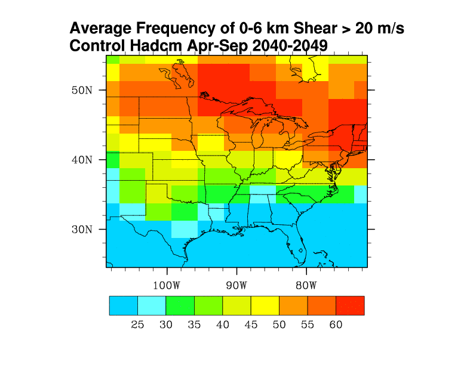
|
|
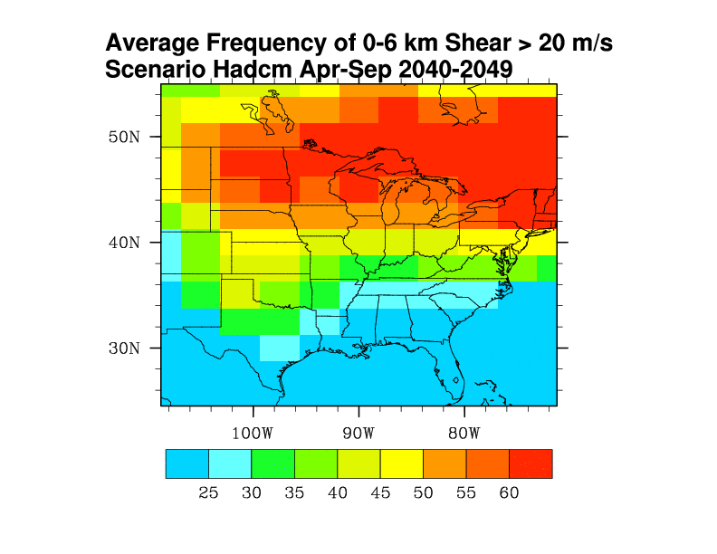
|
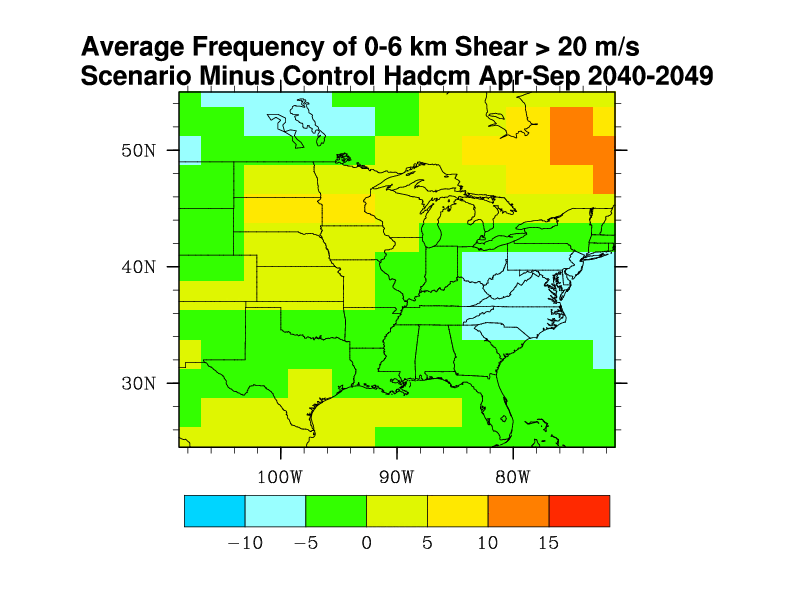
|
Below are fields of the frequency of 0-1 km shear > 10 m/s. We note the following:
- HadCM control seriously underestimates this frequency in the upper Midwest. This is
a trait of GCMs of this resolution.
- HadCM scenario shows a slight increase in the Midwest, which is physically consistent with the increased incidence of 0-6 km shear > 20 m/s.
|
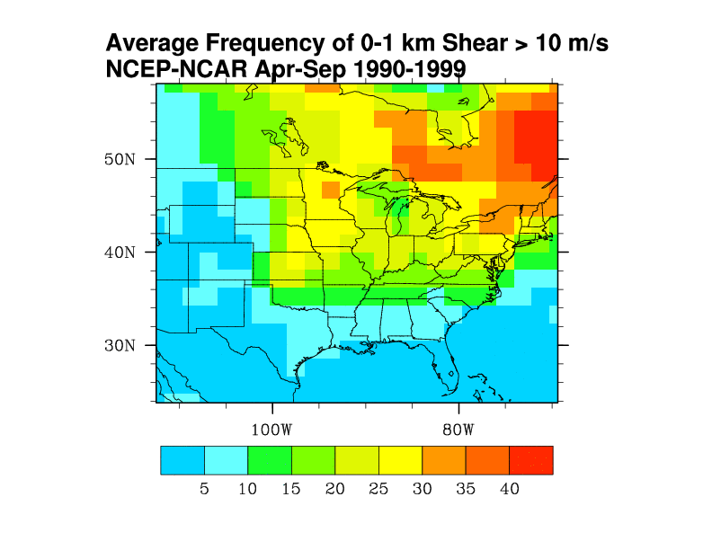
|
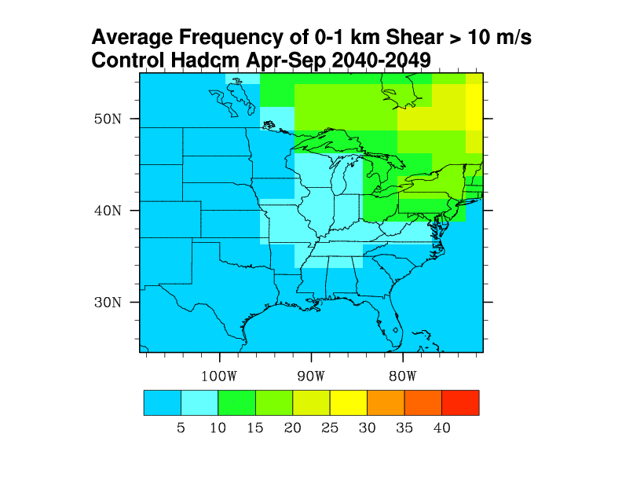
|
|
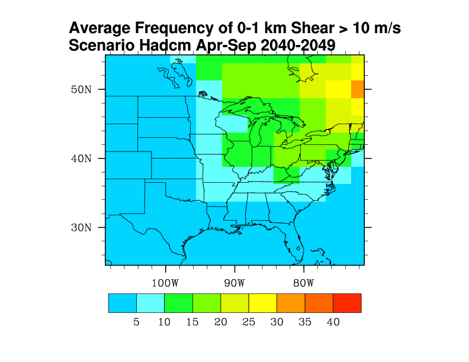
|
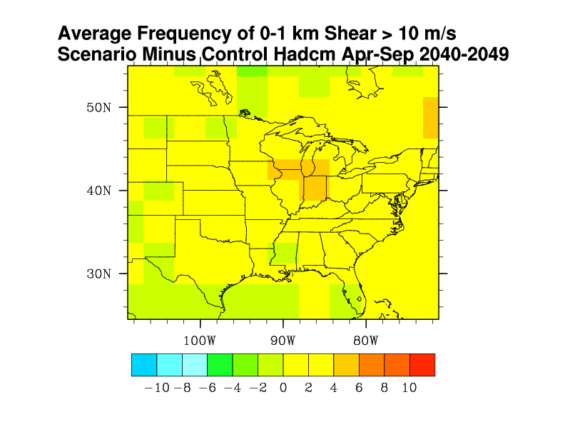
|
{kind=link}
{kind=link}
{kind=link}
{kind=link}
{kind=link}
{kind=link}
{kind=link}
{kind=link}
{kind=link}
{kind=link}
{kind=link}
{kind=link}